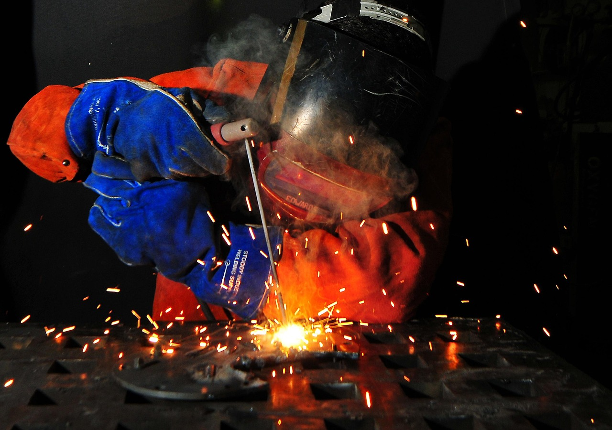
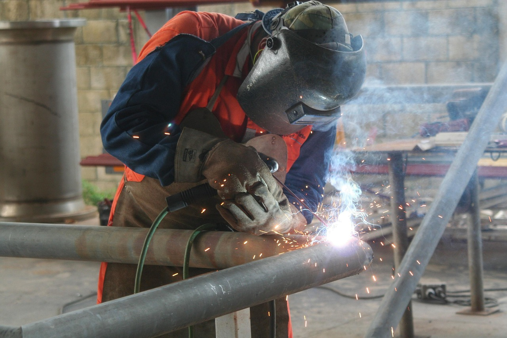
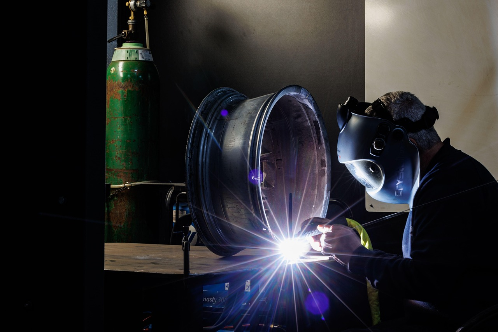

What Aerospace Precision Welding Actually Is
Aerospace precision welding is producing welds for components where failure is not an option: aircraft structures and brackets, engine and exhaust components, thin-wall tubing, fuel and hydraulic lines, high-temperature alloys, and tightly controlled assemblies. Many roles are TIG-focused (sometimes micro-TIG), and some jobs involve orbital welding or tightly controlled fixtures.
People imagine it as “fancy welding.” Reality: it’s low-defect manufacturing. You’re operating inside strict procedures, cleanliness standards, and inspection requirements. The work can feel less like “jobsite welding” and more like “surgical manufacturing.”



Aerospace isn’t “hard” because it’s mythical. It’s hard because the acceptable defect rate is basically “don’t.”
What You Spend Time Doing
You will weld — but you will also spend a lot of time preventing problems: cleaning, verifying setup, controlling variables, and documenting what happened. If you hate careful prep and consistency, this path will punish you daily.
- Surface prep + cleanliness: degreasing, removing oxides, handling parts without contamination.
- Fixturing + alignment: keeping geometry stable so your weld is repeatable, not improvisational.
- Parameter control: amperage range discipline, travel speed consistency, filler control, shielding gas flow awareness.
- Thin material control: avoiding overheating, distortion, burn-through, and brittle edges.
- Finish expectations: clean bead profiles, consistent tie-ins, minimal spatter (often none).
- Inspection readiness: parts often go through visual inspection and NDT (like dye penetrant or x-ray/RT).
- Documentation: recording process steps, lot numbers, traceability, and compliance details.
Aerospace welding is “do it right once.” Rework exists, but it’s expensive, controlled, and not a casual option.
Where the Pressure Comes From
Pressure comes from zero-drama standards. There’s no “it’ll probably hold.” There’s “it meets spec, or it doesn’t.” You may have engineers, QA, and auditors in the ecosystem — and the paperwork can be as real as the weld.
The pressure can also be psychological: the work is repetitive and high-stakes. You have to stay sharp while doing similar operations, sometimes for long runs.
How Aerospace Precision Welding Actually Fails
Failures usually come from contamination, drift, or inconsistency — not from “not knowing how to weld.” Tiny errors become unacceptable when tolerances are strict.
- Contamination: oils, fingerprints, oxide layers, moisture, and poor purge practices create porosity and defects.
- Heat input drift: too hot can distort or change properties; too cold can cause lack of fusion.
- Shielding failures: poor gas coverage, leaks, or turbulence can ruin high-end materials fast.
- Inconsistent tie-ins: start/stop defects and overlap/undercut that fail inspection.
- Documentation mistakes: the weld might be fine, but missing traceability can still fail the process.
Aerospace doesn’t just inspect the weld — it inspects the process. Your consistency is part of the product.
What Traits Actually Matter
Aerospace precision welding rewards people who can be calm, detail-stable, and comfortable with rules. The biggest separator is not raw talent — it’s whether you can maintain discipline under repetition.
- Cleanliness discipline: you don’t cut corners on prep because you understand why it matters.
- Consistency under repetition: you can do the same controlled task without quality drift.
- Fine motor control: stable hands, controlled feeding, steady travel.
- Procedure comfort: you can follow specs without resenting them.
- Inspection tolerance: you don’t take QA personally; you treat it as the environment.
- Documentation tolerance: you can do the paperwork accurately without losing your mind.
If your identity is “I hate rules,” aerospace will feel like a cage. If your identity is “I like precision,” aerospace can feel like home.
The “Aerospace Welder Brain”
Aerospace precision welders think like process engineers: “What variables matter? How do I keep them stable? How do I prove it later?” The goal isn’t creativity — it’s controlled repeatability.
- Variable awareness: heat, purge, cleanliness, fixture stability, filler, timing.
- Repeatability obsession: doing it the same way because that’s how defects stay low.
- Evidence mindset: documentation, traceability, and inspection are normal, not insulting.
- Quiet excellence: you take pride in invisible quality, not loud beads.
Aerospace welding is “precision + proof.” You’re not just building a part — you’re building confidence in the part.
Who Should Probably Avoid It
No shame — some people would rather chew glass than live in this environment.
- You hate procedure and documentation: this work is spec-driven and traceable.
- You get bored by repetition: a lot of aerospace work is controlled repeatability.
- You cut corners when tired: tired is when aerospace punishes you.
- You dislike clean-room vibes: cleanliness discipline is constant.
- You want “big metal” welding: this is often thin, delicate, and unforgiving.
If you want bigger builds and more shop variety, compare with fabrication. If you want field work and heavy assembly, compare with structural welding. If you want procedure-driven but more rugged environments, compare with pipe welding.
Next Step: Get a Signal, Then Compare
Aerospace precision welding is a strong fit if you like controlled environments, fine motor precision, and standards that don’t negotiate. Don’t choose it because it sounds prestigious. Choose it because you can live inside the daily reality: clean prep, tight control, inspection, documentation.
Run the Aerospace Precision Welding Fit Diagnostic first. Then compare paths from the Welding Hub or step back to the Trades Hub. If you want the full map, start at the homepage.